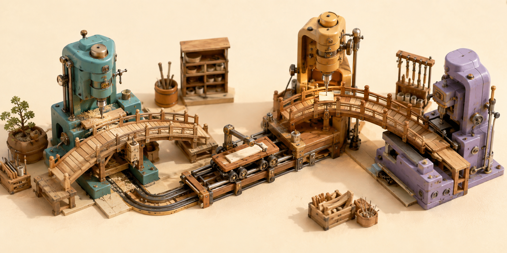

GitHub, 여러 AI가 초안·검토를 나눠 하는 Copilot ‘HydraFusion’ 시험 공개
GitHub가 9월 4일 여러 AI의 역할을 요청마다 조합하는 Project HydraFusion을 연구 프리뷰로 공개했다. 회사 오프라인 평가에서는 세 시험 모두 예상 비용이 줄었지만, 품질이 오른 시험은 하나였다.

여러 모델의 경로를 고르는 Copilot CLI 연구 프리뷰다. 새 AI 모델 이름은 아니다.
현재 이용 창구는 Copilot CLI 실험 메뉴다. 웹·편집기 정식 출시는 아니다. 조직에서 받은 계정은 CLI 사용 정책이 켜져 있는지도 먼저 확인해야 한다.
‘연구 프리뷰’는 이름부터 비교 실험에 가깝다. 오늘 잘 맞는 모델 조합이 다음 버전에도 유지된다고 전제하기보다, 기존 단일 모델과 같은 과제를 시켜 결과·시간·사용량을 함께 재는 기능으로 보는 편이 안전하다.
개발자 입장에서 달라지는 지점은 선택 단위다. 예전에는 모델 하나를 먼저 골랐다면, 이제는 “이 작업을 어떤 순서로 풀 것인가”까지 서비스에 맡긴다. 편해지는 만큼 첫 분류가 맞았는지, 추가 검토가 실제로 값어치를 했는지를 따로 확인해야 한다.
요청마다 고르는 세 갈래
필요한 만큼만 AI 단계를 붙인다
한 번 해결·조건부 이관·다른 모델 검토.
추가 호출 없음.
미달하면 강한 모델로 이관.
검토 뒤 작성 모델이 한 번 수정.
모든 AI를 매번 부르는 구조는 아니다.
중요한 것은 모델 수보다 경로를 고르는 판단이다
여러 모델을 순서대로 부르는 발상 자체는 새롭지 않다. 스탠퍼드 연구진의 FrugalGPT 논문은 가격과 성능이 다른 모델을 질의에 따라 이어 쓰는 ‘캐스케이드’를 제시했다. 값싼 모델의 답이 충분하면 멈추고, 확신이 낮은 요청만 다음 모델로 보내 비용과 정확도의 균형을 찾는 방식이다.
그 논문 결과가 HydraFusion의 성능을 보증하지는 않는다. 일반 질의에서 만든 신뢰도 판정과 저장소 코드를 실제로 고치는 판정은 난도가 다르다. 코드 작업에서는 답의 문장보다 테스트 통과, 변경 범위, 기존 동작 보존처럼 확인해야 할 조건이 많다.
경로 선택기는 두 방향으로 틀릴 수 있다. 부족한 초안을 통과시키면 품질을 잃고, 충분한 초안을 상위 모델에 넘기면 시간과 비용을 낭비한다. 평균 비용이 낮다는 표만으로는 이 두 오류가 어떤 종류의 저장소에서 자주 나는지 알 수 없다.
검토를 분리하는 아이디어는 이미 Copilot CLI의 러버덕 기능 문서에서 더 구체적으로 확인할 수 있다. 주 작업과 다른 계열의 모델이 계획·코드·테스트를 읽고 의견을 내되 파일은 직접 고치지 않는다. 실제 반영 여부는 원래 작업을 맡은 에이전트가 결정한다.
기존 자동 모델 선택은 작업 복잡도와 서비스 상태를 보고 지원 모델 가운데 하나를 고른다. 문서에는 모델을 중간에 바꾸면 캐시 비용이 늘 수 있어 자연스러운 캐시 경계에서 경로를 정한다고 적혀 있다. 여러 호출을 묶는 HydraFusion이 그 추가 비용을 얼마나 상쇄하는지가 실사용의 핵심 질문이다.
그래서 “여러 AI가 협업한다”는 표현보다 “조건부로 계산을 더 쓴다”는 표현이 정확하다. 쉬운 과제는 한 번에 끝내야 이득이고, 어려운 과제는 추가 호출이 재작업을 줄여야 이득이다. 어느 쪽도 충족하지 못하면 모델 수만 늘어난다.
경로 선택기의 품질은 최종 정답률만으로 드러나지 않는다. 어려운 요청을 한 모델로 잘못 끝낸 비율과 쉬운 요청에 불필요한 검토를 붙인 비율을 따로 봐야 한다. 전자는 결함 위험을, 후자는 낭비된 사용량을 설명한다. 두 수치가 없으면 평균 성공률이 비슷한 정책의 차이를 알아보기 어렵다.
검토자가 다른 모델이어도 저장소 문맥과 테스트가 같으면 공통 맹점은 남는다. 요구 사항에 빠진 예외나 틀린 테스트는 작성자와 검토자 모두를 같은 방향으로 이끌 수 있다. 모델의 다양성은 보조 수단이고, 독립된 완료 조건과 사람이 만든 회귀 시험이 최종 판정 기준이어야 한다.
비용 절감률은 구독료 할인율이 아니다
Copilot 요금 문서는 입력·출력·캐시 토큰을 모델별 단가로 계산한 뒤 AI 크레딧으로 바꾼다고 설명한다. 1크레딧은 0.01달러지만, 요금제마다 포함량과 초과 사용 설정이 다르다. 같은 길이의 요청도 선택된 모델과 만들어 낸 출력량에 따라 비용이 달라질 수 있다.
복합 경로에서는 마지막 답만 세면 안 된다. 초안과 검토가 각각 모델 호출이라면 두 단계 모두 토큰을 쓴다. 첫 초안이 길거나 저장소 문맥을 다시 읽으면, 더 싼 모델을 먼저 썼어도 전체 합계가 커질 수 있다.
손익분기점은 첫 모델의 가격만으로 정해지지 않는다. 값싼 초안 비용에 상위 모델로 넘어간 요청의 비율과 검토 비용을 더한 값이 처음부터 강한 모델을 쓴 비용보다 작아야 한다. 이관이 잦아지면 처음의 절약분은 빠르게 사라지므로, 전체 평균과 함께 이관 비율을 확인해야 한다.
반대로 값싼 첫 시도로 대부분을 끝내고 어려운 일부만 넘길 수 있다면 평균 비용은 내려간다. 이때 절감률은 요청 난도 분포에 민감하다. 간단한 수정이 많은 팀과 대규모 리팩터링이 많은 팀은 같은 경로 선택기를 써도 서로 다른 사용량을 보게 된다.
시간도 별도의 비용이다. 검토 한 번이 결함을 미리 찾으면 사람의 재작업을 줄일 수 있지만, 지적이 없거나 중요하지 않다면 응답만 늦어진다. 토큰 비용, 답이 나오기까지의 시간, 사람이 다시 고친 시간을 나눠 기록해야 전체 효율을 볼 수 있다.
평균 사용량만 보면 드문 고비용 요청을 놓치기 쉽다. 요청별 크레딧의 중앙값과 상위 구간을 따로 보고, 두 번째 모델이 붙은 비율도 기록해야 한다. 그래야 평소에는 저렴하지만 가끔 사용량이 급증하는 경로와 꾸준히 예측 가능한 경로를 구분할 수 있다.
팀에서 시험할 때는 한 주 동안 같은 유형의 작은 과제를 모으는 방법이 현실적이다. 단일 모델과 HydraFusion에 비슷한 난도의 일을 나눠 맡기고, 첫 시도 테스트 통과율·수정된 파일 수·사람의 추가 편집 시간·AI 크레딧을 같은 표에 적으면 된다.
권한 경계도 그대로 중요하다. Copilot CLI는 작업 폴더를 신뢰할지 묻고 파일 수정이나 명령 실행을 승인받는 절차를 둔다. 내부에 모델이 여럿이라는 이유로 생성된 셸 명령, 의존성 변경, 비밀정보 접근을 더 넓게 허용할 근거는 없다.
조직 관리자는 허용 모델과 데이터 거주 조건도 별도로 살펴야 한다. 자동 모델 선택 문서처럼 구독 유형과 관리자 정책이 후보 모델을 제한하는 제품도 있다. 개인 계정에서 보인 경로가 회사 계정에서도 같을 것이라 가정하지 말고, 승인된 저장소와 가짜 데이터로 먼저 확인하는 편이 낫다.
회사 시험은 비용 우위와 엇갈린 품질을 함께 보여 준다
GitHub는 세 시험을 같은 조건과 medium 추론으로 돌렸다. 아래는 잘 조정된 설정의 Opus 5 대비 회사 결과다.
GitHub 오프라인 평가 · Opus 5 대비
예상 비용은 모두 낮고, 품질 방향은 엇갈렸다
품질은 퍼센트포인트 차이, 비용은 전체 경로의 추정치다.
세 시험을 모두 이겼다는 표는 아니다.
TerminalBench 2.1 저장소를 보면 평가는 격리된 터미널에서 여러 단계의 작업을 끝내고 자동 검증을 통과하는지 묻는다. 이 점수는 짧은 코드 완성이나 설명의 자연스러움이 아니라, 도구를 사용해 정해진 과제를 완결하는 능력에 가깝다.
DeepSWE 논문은 91개 공개 저장소에서 만든 113개 장기 작업을 설명한다. 파일 하나를 고치는 문제보다 저장소를 탐색하고 여러 파일의 관계를 이해하는 비중이 크다. 표의 작은 품질 하락은 이런 제한된 과제 묶음에서 나온 값이지 모든 개발 언어와 저장소의 평균이 아니다.
CheckpointBench는 공개 저장소의 고정 커밋에 맞춘 내부 시험이다. 전체 과제와 실행 기록은 공개되지 않아 제3자 재현 결과가 아니다.
품질 차이가 ‘퍼센트포인트’라는 점도 중요하다. 예를 들어 기준 성공률이 70%일 때 4.9퍼센트포인트 상승은 74.9%를 뜻한다. 70%의 4.9%만큼 증가했다는 뜻과 다르다. 기사에 기준의 절대 성공률은 제시되지 않아 최종 수준은 상대 차이만으로 계산할 수 없다.
또한 공개 표에는 과제별 결과, 신뢰구간, 반복 실행의 변동 폭이 없다. -0.1퍼센트포인트를 완전한 동률이라고 단정할 수도, 의미 있는 열세라고 단정할 수도 없다. 독자가 확인할 수 있는 사실은 해당 회사 실험의 점 추정치가 기준보다 조금 낮았다는 데까지다.
평균은 실패의 위치도 숨긴다. 비용이 크게 줄어도 보안 수정이나 데이터 이전처럼 드물고 중요한 과제에서 실패가 몰리면 팀에는 나쁜 교환일 수 있다. 반대로 문서 정리나 반복 수정에서만 값싼 경로를 잘 고른다면 제한적으로 쓸 가치가 있다.
독립 재현에는 막대그래프보다 더 많은 재료가 필요하다. 과제 목록과 정확한 버전, 실행 횟수, 실패 처리 규칙, 모델별 토큰 수, 원시 채점 결과가 공개돼야 같은 조건을 다시 만들 수 있다. 일부만 빠져도 비용 차이가 경로 선택에서 왔는지 가격 가정에서 왔는지 분리하기 어렵다.
시간이 지나면 비교 기준도 움직인다. 모델 가격과 캐시 정책, 벤치마크 과제, 실행 도구가 바뀌면 오늘의 절감률을 그대로 재사용할 수 없다. 팀이 기능을 계속 쓴다면 한 번의 도입 시험으로 끝내지 말고, 대표 과제 묶음을 보관해 제품 변경 뒤 같은 방식으로 다시 측정해야 한다.
독립 재현 전에는 내 저장소의 작은 실험이 더 유용하다
오프라인 벤치마크는 입력과 채점이 고정돼 비교하기 좋지만, 실제 저장소에는 사내 규칙, 느린 테스트, 비공개 의존성, 오래된 빌드 도구가 섞여 있다. 모델 응답 시간과 서비스 혼잡, 캐시 상태도 표의 고정 가격 가정과 다르게 움직인다.
첫 시험은 결과를 쉽게 판정할 수 있는 한 가지 업무가 좋다. 실패하는 테스트의 원인이 분명한 버그 수정이나 범위가 작은 리팩터링을 고르고, 허용 파일과 완료 조건을 요청문에 적는다. 실행 전 상태를 고정해 두면 두 방식의 결과를 되돌려 비교하기도 쉽다.
평가 순서는 코드 검토와 같다. 먼저 테스트가 통과했는지 보고, 요구하지 않은 파일이 바뀌지 않았는지 확인한 뒤, 사용량과 시간을 비교한다. 설명이 그럴듯하거나 여러 모델 이름이 보였다는 사실은 성공 기준이 아니다.
조직 도입을 판단한다면 평균뿐 아니라 최악의 사례를 남겨야 한다. 잘못된 경로 선택으로 재시도가 늘어난 작업, 검토가 잡아낸 실제 결함, 단일 모델보다 늦어진 작업을 따로 모으면 어디에 기능을 켜고 끌지 결정할 수 있다.
HydraFusion의 의미는 새 초대형 모델보다 모델 선택을 실행 경로 설계로 넓힌 실험에 있다. 공개 수치는 비용 가능성을 보여 주지만 보편적인 품질 우위를 증명하지는 않는다. 지금의 가장 좋은 사용법은 목표가 분명한 작은 과제에서 단일 모델과 나란히 시험하고, 코드 결과·시간·AI 크레딧을 함께 확인하는 것이다.
더 읽을 자료
- GitHub Blog — Project HydraFusion 발표·작동 방식·회사 오프라인 평가
- GitHub Docs — Copilot 자동 모델 선택의 범위와 HydraFusion과의 차이
- GitHub Docs — 다른 모델이 읽기 전용으로 검토하는 Rubber Duck
- GitHub Docs — 모델별 토큰 가격과 AI 크레딧 계산
- GitHub Docs — Copilot CLI 이용 조건과 권한 확인
- FrugalGPT — 여러 모델을 조건부로 잇는 캐스케이드 연구
- Terminal-Bench — TerminalBench 2.1 공식 저장소와 평가 범위
- DeepSWE — 113개 장기 소프트웨어 작업의 설계와 한계